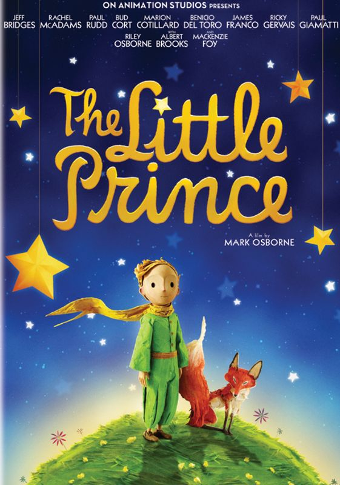
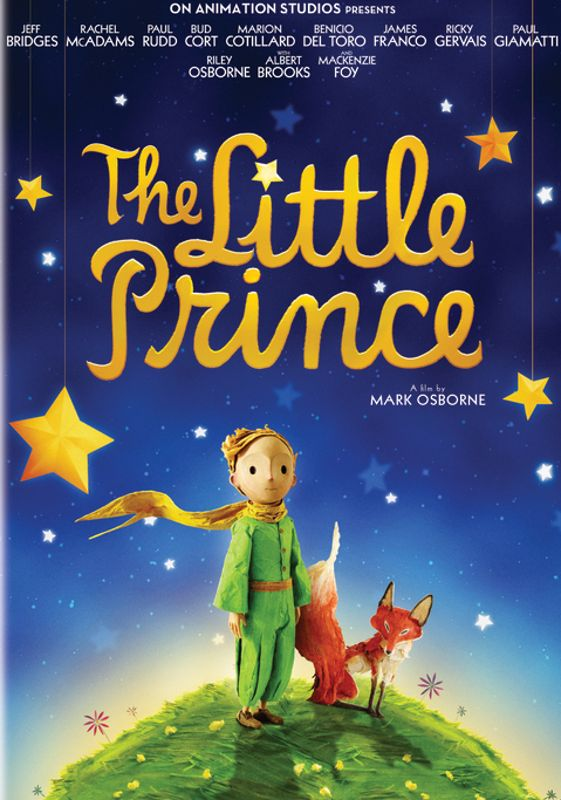

Kids

 

Anne of Green Gables
The Giving Tree
The Little Prince
A Wrinkle in Time
Children learn to love the sound of language before they even notice the existence of printed words on a page.
Reading books aloud to children stimulates their imagination and expands their understanding of the world.
It helps them develop language and listening skills and prepares them to understand the written word. When the
rhythm and melody of language become a part of a child's life, learning to read will be as natural as learning
to walk and talk.
Even after children learn to read by themselves, it's still important for you to read aloud together. By reading
stories that are on their interest level, but beyond their reading level, you can stretch young readers'
understanding and motivate them to improve their skills.
Although the life of a parent is often hectic, you should try to read with your child at least once a day at a
regularly scheduled time. But don't be discouraged if you skip a day or don't always keep to your schedule. Just
read to your child as often as you possibly can.
Taking the time to read with your children on a regular basis sends an important message: Reading is worthwhile.